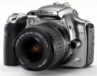

器材
党
全部器材
产品年表
名词百科
榜单
器材库
> APS及其以下画幅可换镜头数码相机 > EOS 300D

佳能
EOS 300D
4.03
综合评分
分类
APS及其以下画幅可换镜头数码相机
点评
0 条
图片
0 张
评测
0 篇
Canon公司于2003年8月20日推出EOS 300D，该机的日本型号为EOS Kiss Digital；美洲型号为EOS Rebel Digital。
产品类型
APS及其以下画幅可换镜头数码相机
综合评分
4.03分
操作手册
下载
无忌评测
CANON 300D初试之主观感受
规格参数
网友点评
(0)
产品图 / 样片
(0)
评测文章
(0)
规格总览
产品类型
APS画幅可换镜头数码相机
日本地区型号
EOS Kiss Digital
北美地区型号
EOS Digital Rebel
发布日期
2003-08-20
厂家推荐价格
9,800.00 （人民币）
停产
是
影像规格
影像传感器
CMOS
影像传感器尺寸
22.7 x 15.1mm
总像素
650万
有效像素
630万
色彩滤镜
RGB原色彩色滤光镜
低通滤镜
固定式，在影像传感器前面
色彩空间
sRGB, Adobe RGB
最大解像度
3072 x 2048
静态图像格式
JPEG, RAW
静态图像尺寸
3072 x 2048 ; 2048 x 1360 ; 1536 x 1024
静态图像质量
RAW, Fine, Normal
画幅比
3:2
镜头和对焦
镜头卡口
Canon EF
兼容镜头
Canon EF系列镜头（1.6倍焦距变换比率）
对焦系统类型
TTL-CT-SIR CMOS
对焦点
7点
对焦模式
单次自动对焦；人工智能伺服自动对焦；单次自动对焦/ 人工智能伺服自动对焦；自动选择(不能在高级曝光模式下选择) ；手动对焦
AF辅助灯/光
有
手动对焦
支持
曝光控制
测光模式
中央重点测光, 评价测光, 局部测光
测光范围
1EV~20EV
快门类型
电子控制，纵走式，焦平面快门
快门速度
1/4000 ~ 30 秒. (以1/3或1/2档调节)，B门
曝光补偿
±2EV以1/3或1/2EV级调整
自动曝光锁
有
连拍
连拍速度2.5fps，连续拍摄4张
闪光灯
内置闪光灯
弹出式
闪光指数
GN 13 (ISO 100)
闪光补偿
±2EV以1/2或1/3EV级调整
外接闪光灯
兼容佳能SpeedliteEX系列E-TTL自动闪光灯
取景器/显示屏
取景器
眼平五棱取景器, 固定
取景范围
95%
取景放大倍率
0.8倍
屈光度调节范围
-3.0 ~ +1.0
反光镜
快速瞬回半透明
景深预视
有
LCD类型
彩色TFT LCD
LCD尺寸
1.8英寸
LCD像素
11.8万
视野率
100%
亮度调节级数
5级
文件输入/输出
记录媒介
CF
数据接口
USB
电源
电池
一个镍氢电池组 BP-511/BP-512
续航能力
环境温度 20°C/68F：约 600张；环境温度 0°C/32F：约 450 张
外接电源
备有交流电适配器
机身规格
颜色
银色
尺寸
142 x 99 x 72.9mm
重量
560g
其它
支持语言
中文（简体）, 英语, 日语, 法语, 德语, 西班牙语
工作温度
0-40℃
工作湿度
0-85%
备注
有电池电量检测功能，可设置在 1、2、4、8、15、30分钟后无操作情况
该产品暂无存档的网友点评
该产品暂无存档的产品图
评测 / 相关文章
该产品暂无存档的评测文章
相关文章
［资讯］佳能老数码单反的自留地
（原站已下线）
［资讯］探秘EOS传奇（上）
（原站已下线）
［资讯］Loreo推出佳能APS-C单反专用3D镜头
（原站已下线）
［影像］影像日记之-蔡斯头配数码身（300d）实验
（原站已下线）
［试用］Canon EOS 300D vs. Nikon D70
（原站已下线）
［资讯］把EF50/1.8II反接在300D上实现AF和光圈可调
（原站已下线）
［试用］佳能10D和300D兄弟格斗
（原站已下线）